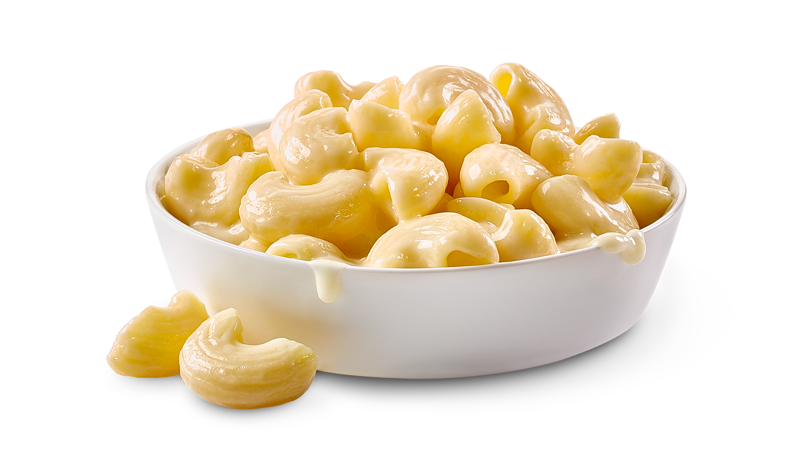

Mac n Cheese

Makes about 4 servings of Mac-n-Cheese
Ingredients
- 4 oz of shell or macaroni noodles
- 1.5 tbsp of butter
- 3/4 cup of milk
- 1.5 tbsp of flour
- pinch of salt
- pinch of pepper
- 1 cup of shredded sharp cheddar cheese
Directions
- In a pot cook the pasta
- While the Pasta is cooking, in a separate pot add butter and melt over low heat
- When the butter has completely melted, wisk in the flour, salt, and pepper
- Wisk in the milk
- Stir frequently until thickened. Avoid turning the heat up too much as you could burn the rue.
- When the rue is thickened to a creamy soup consistency, stir in the cheese until the cheese melts completely.
- When the pasta is done drain it, and mix it into the cheese sauce.
- Enjoy!
Home